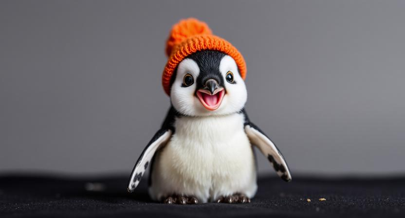

Penguins are fascinating flightless birds that live almost exclusively in the Southern Hemisphere. While many people associate them with icy Antarctica, some species actually live in warmer climates, such as the Galápagos penguin. Their black-and-white coloring helps camouflage them in the water, keeping them safe from predators.
Unlike most birds, penguins are incredible swimmers. Their wings act like flippers, allowing them to glide through the water at high speeds. Some penguins can swim up to 15 miles per hour and dive deep in search of food like fish and krill.
Penguins are very social and often live in large colonies. These groups can include thousands of penguins and help them stay safe and find mates. Many penguins return to the same partner every year, showing strong loyalty.
One of the most unique penguin behaviors is how they care for their eggs. Emperor penguins keep their eggs warm by balancing them on their feet and covering them with a flap of skin. This helps protect the egg from freezing temperatures.
Penguins communicate using sounds and body language. Each penguin has a unique call that helps them find their mate and chicks in crowded colonies. They also use movements like bowing to build relationships.
Although penguins may look clumsy on land, they are graceful in the water. Their streamlined bodies help them dive and swim efficiently. Some species can dive over 1,500 feet and stay underwater for more than 20 minutes!